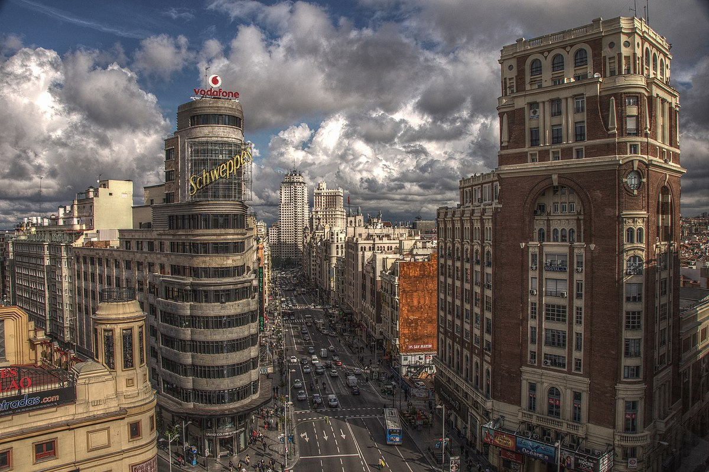

Madrid o munich


Quieres conocer la ciudad de una manera mucho más personal y exclusiva? Un tour privado es lo que buscas.
Podemos recorrer el Madrid de los Austrias o el Monumental, el masónico, el que está plagado de fantasmas,
El que sufrió los avatares de una Guerra Civil… o bien descubrir los rincones más fascinantes de Múnich,
Desde su inabordable Jardín Inglés hasta aquellos lugares que dieron origen al nazismo y a una de las épocas más oscuras de la Historia de Europa…
... o simplemente, adaptarnos a la ruta que tú quieras realizar. Porque tú eliges.